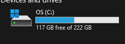

insa ilo la ilo mute mute a li lon li pali a tawa ilo · ilo li awen e ilo
insa kepeken poki insa ona a · suli la nasin poki tu li lon · nasin SSD en
nasin HDD · mi kepeken nasin SSD · taso nasin SSD anu nasin HHD anu nasin
poki ale ante la sina kepeken ilo sina lon tenpo mute mute lon tenpo suli
suli la ijo mute a li ken kama lon poki · ijo ante li ken kama ken ala lon
poki tan ni a · o lukin e poki mi a,,,
ijo insa li mute suli wawa ike la ijo ante li KEN ALA A kama lon poki · ike a ·
mi ken pona e ni kepeken seme a
mi alasa e ijo suli a lon poki ilo · tu li kama tan alasa · lipu
CapabilityAccessManager.db-wal (~20 GB) en poki insa (poki li ken poki e poki lon insa)Windows.old (~20 GB anu suli) · lon la mi sona ala e ijo tu ni · taso ona
li pali lili taso tawa mi la li SULI A la mi weka e ona · ,,,pali ni li kama
e ike wawa a
ike wawa
lipu CapabilityAccessManager.db-wal li pali lili taso tawa pilin mi tawa
lukin ike mi · taso lon la ona li pali suli · pali ona li suli tawa ilo
mute · ilo kute mi en ilo Wifi en ilo mute a · mi pini li open sin
e ilo mi la ilo li kama nasa a · pali ale ilo li kama kepeken tenpo
sssuuullliii aaa · taso a nanpa wan la mi ken ala kepeken ilo Wifi · IKE A ·
mi ken ala toki tawa jan pona tawa ijo pona lon lipu Siko la
ilo li lon tan seme a!
mi ken ala kepeken ilo ni la mi kama alasa e nasin pona kepeken ilo ante
(luka) mi · mi alasa lon tenpo SULI A (20 mins) · taso nasin wan li
nanpa wan · mi sin e nasin ilo Windows mi · pali ni li weka e ijo mute a
tan ilo mi · aaa open la ni li ike a tawa mi · taso nasin ante pona li lon
ala la mi kepeken · ona li kama e pona mute e pona ni kin
pona

ni li pona aaa · kin mi kepeken ala anu kepeken lili taso e ilo mute a ·
ilo ale ni li kama weka a
sin (ni) li pona
:3
import nimib
import ../common/common
nbInit
nb.tpFooter()
nb.darkMode()
nb.title = "sin ilo"
nb.addCss: """
figure { text-align: center; }
"""
nbText: """
# sin ilo
insa ilo la ilo mute mute a li lon li pali a tawa ilo · ilo li awen e ilo
insa kepeken poki insa ona a · suli la nasin poki tu li lon · nasin SSD en
nasin HDD · mi kepeken nasin SSD · taso nasin SSD anu nasin HHD anu nasin
poki ale ante la sina kepeken ilo sina lon tenpo mute mute lon tenpo suli
suli la ijo mute a li ken kama lon poki · ijo ante li ken kama ken ala lon
poki tan ni a · o lukin e poki mi a,,,
"""
nbImage(
"images/pokimiaaa.png",
"",
""
)
nbText: """
ijo insa li mute suli wawa ike la ijo ante li KEN ALA A kama lon poki · ike a ·
mi ken pona e ni kepeken seme a
mi alasa e ijo suli a lon poki ilo · tu li kama tan alasa · lipu
`CapabilityAccessManager.db-wal` (~20 GB) en poki insa *(poki li ken poki e poki lon insa)*
`Windows.old` (~20 GB anu suli) · lon la mi sona ala e ijo tu ni · taso ona
li pali lili taso tawa mi la li SULI A la mi weka e ona · ,,,pali ni li kama
e ike wawa a
"""
nbSep()
nbText: """
## ike wawa
lipu `CapabilityAccessManager.db-wal` li pali lili taso tawa pilin mi tawa
lukin ike mi · taso lon la ona li pali suli · pali ona li suli tawa ilo
mute · ilo kute mi en ilo Wifi en ilo mute a · mi pini li open sin
e ilo mi la ilo li kama nasa a · pali ale ilo li kama kepeken tenpo
sssuuullliii aaa · taso a nanpa wan la mi ken ala kepeken ilo Wifi · IKE A ·
mi ken ala toki tawa jan pona tawa ijo pona lon lipu Siko la
ilo li lon tan seme a!
mi ken ala kepeken ilo ni la mi kama alasa e nasin pona kepeken ilo ante
(luka) mi · mi alasa lon tenpo SULI A (20 mins) · taso nasin wan li
nanpa wan · mi sin e nasin ilo Windows mi · pali ni li weka e ijo mute a
tan ilo mi · aaa open la ni li ike a tawa mi · taso nasin ante pona li lon
ala la mi kepeken · ona li kama e pona mute e pona ni kin
### pona
"""
nbImage(
"images/pokimipona.png",
"",
"poki li suli 222 GB · suli 117 GB li ken kepeken"
)
nbText: """
ni li pona aaa · kin mi kepeken ala anu kepeken lili taso e ilo mute a ·
ilo ale ni li kama weka a
sin (ni) li pona
:3
"""
nbSave